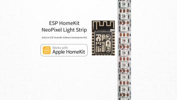
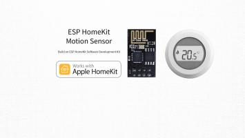
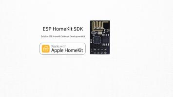
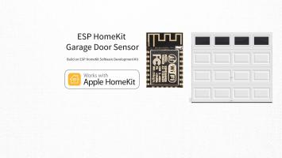

Also on Studio Pieters
StudioPieters®
OctoPrint TM is a great solution for controlling your 3D printer. However, it's …

ESP8266 – HomeKit NeoPixel RGBW …
In my previous blog here I tested the ESP 8266 - HomeKit NeoPixel Light …

Raspberry Pi® – Powerunit® – Part III
In my previous blogs I started a new project Raspberry Pi® – …

ESP8266 – HomeKit Thermostat
I am so enthusiastic about this Software Development Kit, that I going to write a …
HomeKit Code Analysis
Now that I made a few examples of the HomeKit accessories, It's time for …

ESP HomeKit SDK – On a Raspberry Pi …
The first question that probably comes to your mind is "What?, Why?" …
ESP8266 – HomeKit NeoPixel Light Strip EX
In each Blog I will address a other accessory that you can add to your HomeKit …

ESP8266 – HomeKit Garage Door Sensor
In each Blog I will address a other accessory that you can add to your HomeKit …